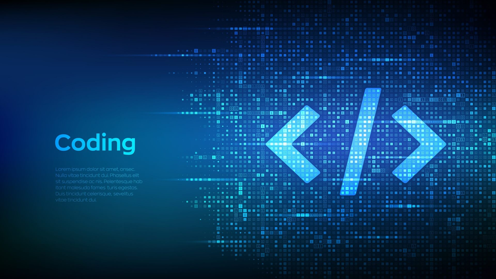
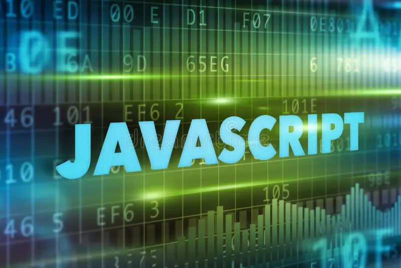

Map
Map
Sticker Map
Una mappa interattiva per tracciare gli sticker che ho lasciato in giro per il mondo.
 Linux
Linux
Project Work primo anno
Automazione della configurazione di un server Samba a partire da dati strutturati.

CreativeCosplay
Progetto creativo personale tra design, costruzione manuale e cura del dettaglio.
Web
Ristorante La Bastia
Sviluppo del sito vetrina del ristorante, dalla UI alla pubblicazione online.
 Photo
Photo
Fotografia Aerea
Scatti e riprese realizzati con drone e reflex, con attenzione a composizione e luce.
Workflow
Project Work secondo anno
Contributo tecnico su realNIS tra dev container, workflow Git e collaborazione di team.
Homelab
Homeserver
Laboratorio domestico per hosting di servizi, test di rete e sperimentazione Linux.

PrototypeVibe Coding
Esperimenti web rapidi costruiti per testare idee, flussi e interfacce in poco tempo.